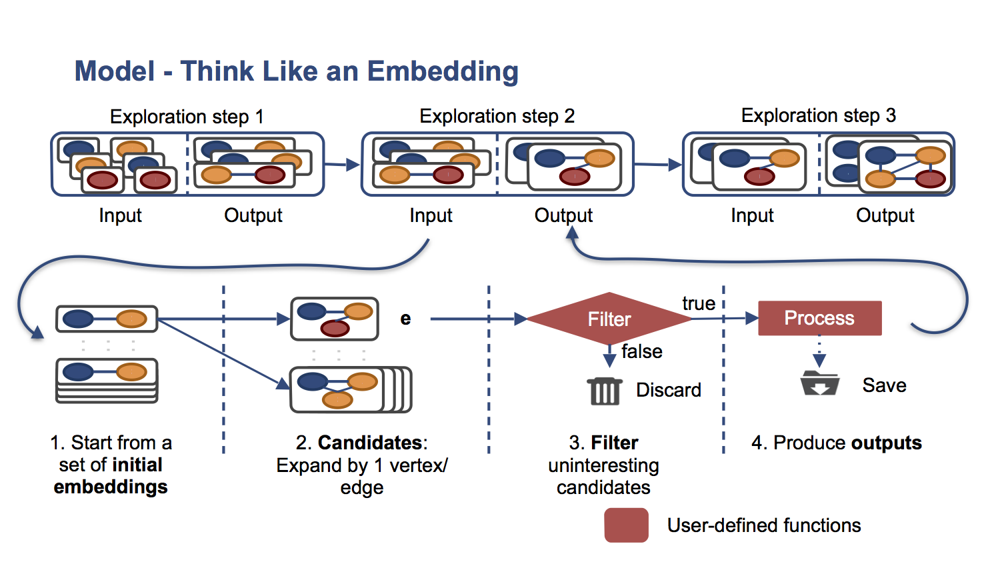

Programming in Arabesque
Arabesque simplifies the programming of Graph Mining Problems as presented in our paper, that describes the system and provides a comprehensive introduction to the concepts that we describe below.
We show how Arabesque can be used to solve three fundamental problems in Graph Mining. Finding cliques, counting motifs and frequent subgraph mining. We chose these problems because they represent different classes of graph mining problems. Finding cliques is an example of dense subgraph mining, and allows one to prune the embeddings using local information. Counting motifs requires exhaustive graph exploration up to some maximum size. Frequent subgraph mining is an example of explore-and-prune problems, where only embeddings corresponding to a frequent pattern need to be further explored. We discuss these problems below in more detail.
High-Level Programming API
For Reference we have the high-level API in the simple case where we require no aggregation (first two algorithms). 
For the third case, we have the aggregation based API.

An aggregator in Arabesque has several components:
- Key Class
- Value Class
- Reduction function (f(V, V) -> V)
- (Optional) Function to execute at the end of the aggregation to remove stuff you’re not interested in (it doesn’t aggregate anything)
Finding Cliques
Finding cliques has many variations. Here, we present the variation of finding cliques of a maximum size. Following, we have the implementation in Arabesque.
public class CliqueComputation
extends VertexInducedComputation<VertexInducedEmbedding> {
private static final String MAXSIZE = "arabesque.clique.maxsize";
private static final int MAXSIZE_DEFAULT = 4;
int maxsize;
@Override
public void init() {
super.init();
maxsize = Configuration.get().getInteger(MAXSIZE, MAXSIZE_DEFAULT);
}
@Override
public boolean filter(VertexInducedEmbedding embedding) {
return isClique(embedding);
}
private boolean isClique(VertexInducedEmbedding embedding) {
return embedding.getNumEdgesAddedWithExpansion()
== embedding.getNumVertices() - 1;
}
@Override
public void process(VertexInducedEmbedding embedding) {
if (embedding.getNumWords() == maxsize) {
output(embedding);
}
}
@Override
public boolean shouldExpand(VertexInducedEmbedding newEmbedding) {
return newEmbedding.getNumWords() < maxsize;
}
}In Arabesque, the user must define the Computation class for the problem at hand. In this particular case, we have defined the class CliqueComputation that extends the VertexInducedComputation, which dictates that the exploration that Arabesque will perform is Vertex Induced. As we explained earlier, this exploration extends an embedding by adding all edges of a vertex.
To solve the problem and control the exploration the user defines two main functions. The filter function that decides whether the passed embedding is a valid clique and thus it should be further expanded and processed, and the process that dictates what to do with the embeddings that passed the filter function. In this particular problem, we only want to output the embeddings. Note, that the complexity of the exploration and the required checks for avoiding redudant work, and the canonicality checks are completely transparent to the end-user. Properties like anti-monotonicity are trivial to show that hold for this filter function.
For performance reasons, the filter is implemented in an incremental way. An embedding consists of two parts, a parent embedding that had passed all the tests in the previous exploration step, and a current candidate extension. Thus we can efficiently implement the filter function by only considering whether the candidate extension vertex connects to all previous vertices in the parent embedding. This can be done very easily, by getting the number of new edges added to this embedding getNumEdgesAddedWithExpansion() and checking if this number is equal to the number of vertices in the parent embedding which by default is one less than the current embedding.
To produce the output, we simply check whether we have reached the size of cliques we are interested in. If we have, we simlpy output the embedding.
To avoid going to deeper depths than the one we want to discover, the user can override the optional shouldExpand function that checks whether we need to further expand the embedding and thus continue the exploration. By default, this function returns true, and by overriding it we can stop the processing faster.
Counting Motif
A motif is defined as a connected pattern of vertex induced embeddings that exists in an input graph. Further, a set of motifs is required to be non-isomorphic, i.e., there should obviously be no duplicate patterns. In motif mining, the input graph is assumed to be unlabeled, and there is no minimum frequency threshold; rather the goal is to extract all motifs that occur in the graph along with their frequency distribution. Since this task is inherently exponential, the motifs are typically restricted to patterns of order (i.e., number of vertices) at most k. For example, for k = 3 we have two possible motifs: a chain where ends are not connected and a (complete) triangle. Following, we have the Motif implementation in Arabesque.
public class MotifComputation
extends VertexInducedComputation<VertexInducedEmbedding> {
private static final String MAXSIZE = "arabesque.motif.maxsize";
private static final int MAXSIZE_DEFAULT = 4;
private static LongWritable reusableLongWritableUnit = new LongWritable(1);
private int maxsize;
@Override
public void init() {
super.init();
maxsize = Configuration.get().getInteger(MAXSIZE, MAXSIZE_DEFAULT);
}
@Override
public void initAggregations() {
super.initAggregations();
Configuration conf = Configuration.get();
conf.registerOutputAggregation(conf.getPatternClass(),
LongWritable.class,
new LongSumReduction());
}
@Override
public void process(VertexInducedEmbedding embedding) {
if (embedding.getNumWords() == maxsize) {
mapOutput(embedding.getPattern(), reusableLongWritableUnit);
}
}
@Override
public boolean shouldExpand(VertexInducedEmbedding newEmbedding) {
return newEmbedding.getNumWords() < maxsize;
}
}The Computation class, MotifComputation, extends the VertexInducedComputation, which dictates that the exploration that Arabesque will perform is Vertex Induced in a similar way to finding cliques.
For counting Motifs, we are interested in all possible variations of the embeddings and thus we don't need to implement a special filter function. The default filter function returns true and is sufficient for this problem. For the process implementation, we need to compute for every embedding the pattern it corresponds (motif for this problem), and then group it over all embeddings to compute the frequencies of the motifs. In Arabesque, this aggregation is performed using the output aggregators, which are similar to functionality to Giraph's Aggregators, and allow to compute aggregate statistics on a pattern level or any arbitrary value. In the process function, we simlpy increase by one the pattern that this empedding corresponds. Before using the output Aggregators, we need to initialize them, something done in the initAggregations function. In this function, we register the aggregator and we define as parameters the type of aggregation to perform. For motifs, a simple sum aggregation is sufficient.
The shouldExpand similarly to the Clique computation, terminates the expansion when the desired depth has been reached.
Frequent Subgraph Mining
The task of frequent subgraph mining (FSM), i.e., finding those subgraphs (or patterns, in our terminology) that occur a minimum number of times in the input graph. The occurrences are counted using some anti-monotonic function on the set of its embeddings. The FSM task is to mine all frequent subgraph patterns from a single graph.
In frequent subgraph mining, we use aggregation to calculate the support function required to prune the infrequent patterns. The support metric is based on the notion of domain, which is defined as the set of distinct mappings between a vertex in a pattern and the matching vertices in any automorphism of an embedding. The process function invokes map to send the domains of embedding to the reducer responsible for the pattern of this embedding. The function reduce merges all domains: the merged domain of a vertex in a pattern is the union of all its aggregated mappings. The aggregationFilter function reads the merged domains of p using readAggregate and computes the support, which is the minimum size of the domain of any vertex in the pattern. It then filters out embeddings for patterns that do not have enough support. Finally, the aggregationProcess function outputs all the embeddings having a frequent pattern (those that survive the aggregation-filter).
The implementation in Arabesque is the following.
public class FSMComputation
extends EdgeInducedComputation<EdgeInducedEmbedding> {
public static final String CONF_SUPPORT = "arabesque.fsm.support";
public static final int CONF_SUPPORT_DEFAULT = 1000;
public static final String CONF_MAXSIZE = "arabesque.fsm.maxsize";
public static final int CONF_MAXSIZE_DEFAULT = -1;
private DomainSupport reusableDomainSupport;
private AggregationStorage<Pattern, DomainSupport> previousStepAggregation;
private int maxSize;
private int support;
@Override
public void init() {
super.init();
Configuration conf = Configuration.get();
support = conf.getInteger(CONF_SUPPORT, CONF_SUPPORT_DEFAULT);
maxSize = conf.getInteger(CONF_MAXSIZE, CONF_MAXSIZE_DEFAULT);
reusableDomainSupport = new DomainSupport(support);
previousStepAggregation = readAggregation();
}
@Override
public void initAggregations() {
super.initAggregations();
Configuration conf = Configuration.get();
conf.registerInterStepAggregation(conf.getPatternClass(),
DomainSupport.class,
new DomainSupportReducer(),
new DomainSupportEndAggregationFunction());
}
// Previous Step embeddings
@Override
public boolean aggregationFilter(EdgeInducedEmbedding previousStepEmbedding) {
// Using the DomainSupportEndAggregationFunction, we
// removed all mappings for non-frequent patterns.
// So we simply have to check if the mapping has
// the pattern for the corresponding key
return previousStepAggregation.containsKey(previousStepEmbedding.getPattern());
}
@Override
public void aggregationProcess(EdgeInducedEmbedding previousStepEmbedding) {
output(previousStepEmbedding);
}
// Current step embeddings
@Override
public void process(EdgeInducedEmbedding embedding) {
reusableDomainSupport.setFromEmbedding(embedding);
map(embedding.getPattern(), reusableDomainSupport);
}
@Override
public boolean shouldExpand(EdgeInducedEmbedding newEmbedding) {
return maxSize < 0 || newEmbedding.getNumWords() < maxSize;
}
}The Computation class FSMComputation extends the EdgeInducedComputation class, which determines that the exploration is edge induced, a different exploration strategy to the previous two Applications. As in the motifs problem, we don't have to define a filter function, since we want to exhaustively evaluate all different possibilities.
The pruning functionality can only be performed in the next superstep, thus it requires a different form of aggregation compared to the output Aggregators we used earlier. The special aggregators that we use are called inter step aggregators, and need to be initialized in the initAggregations() function. When interStepAggregator are used, before the actual computation of the embeddings, we can pre-filter the embeddings of the previous superstep using a new filtering step called aggregationFilter. The aggregationFilter checks whether the pattern associated with an embedding is a frequent one or not. If the pattern is frequent, then this embedding is allowed to proceed with the expansions and further be processed in this superstep. Otherwise the embedding is rejected. Similarly to the filter, we provide an aggregationProcess function that is called after the aggregationFilter is true, that allows for processing the embedding, for instance, by written to the output.
For efficiency reasons, we allow the interStepAggregator after aggregation has finished to be cleaned. This is an optional parameter that can work on the aggregated value, before the value is propagated for the next superstep. In our case, this is performed by the DomainSupportEndAggregationFunction which prunes at the end of the superstep the domains that are not frequent.
The process function for FSM is used first to create the domain for the embedding, and then aggregate the domains based on the pattern (map function).
If required to control the depth of the exploration, the user can define the optional shouldExpand function similarly to the previous applications.
One last difference to the previous applications is that the output can only be generated after the superstep finishes. Thus to output the processing, we take the same approach that Giraph uses to use the Master Computation functionality that is called at the beginning of the superstep, where the results of the inter step aggregation are available. The internalCompute, simply reads the aggregated value and prints the information.
public class FSMMasterComputation extends MasterComputation {
@Override
public void internalCompute() {
super.internalCompute();
AggregationStorage<Pattern, DomainSupport> aggregationStorage = getAggregatedValue(Configuration.AGG_INTERSTEP);
if (aggregationStorage.getNumberMappings() > 0) {
System.out.println("Frequent patterns:");
int i = 1;
for (Pattern pattern : aggregationStorage.getKeys()) {
System.out.println(i + ": " + pattern);
++i;
}
}
// If frequent patterns is empty and superstep > 0, halt
else if (getSuperstep() > 0) {
haltComputation();
}
}
}How to Run an Arabesque Job
To configure an Arabesque job, we use YAMLs files. We have a cluster.yaml file that defines the parameters of the servers, for instance number of workers, threads etc. The application yaml file specifies the problem to run and applicable parameters.
An example of the cluster.yaml file:
num_workers: 2
num_compute_threads: 32
output_active: no
# Giraph configuration
giraph.nettyClientThreads: 32
giraph.nettyServerThreads: 32
giraph.nettyClientExecutionThreads: 32
giraph.channelsPerServer: 4
giraph.useBigDataIOForMessages: true
giraph.useNettyPooledAllocator: true
giraph.useNettyDirectMemory: true
giraph.nettyRequestEncoderBufferSize: 1048576Configuration for Cliques:
computation: io.arabesque.examples.clique.CliqueComputation
input_graph_path: mico-qanat-sortedByDegree-sameLabel.txt
#communication_strategy: cache
# Custom parameters
arabesque.clique.maxsize: 4Configuration for Motifs:
computation: io.arabesque.examples.motif.MotifComputation
input_graph_path: mico-qanat-sortedByDegree-sameLabel.txt
#communication_strategy: cache
# Custom parameters
arabesque.motif.maxsize: 4Configuration for Frequent Subgraph Mining:
computation: io.arabesque.examples.fsm.FSMComputation
master_computation: io.arabesque.examples.fsm.FSMMasterComputation
input_graph_path: citeseer-qanat-sortedByDegree.txt
#communication_strategy: cache
# Custom parameters
arabesque.fsm.support: 300
#arabesque.fsm.maxsize: 7
arabesque.fsm.num_agg_splits: 10To actual submit an Arabesque job, for instance Cliques, you simply run
./run_arabesque.sh cluster.yaml cliques.yamlRequirements for Input Graph
The graph should have sequential ids assigned to vertices.